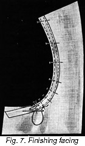

1926—The New-Way Course in Fashionable Clothes-Making
Lesson 8—Facings
What is a Facing?
Very often you will find that you haven't sufficient length of material to make a hem on your skirt or to turn up the sleeves at the cuff. Or you may find that it is not practical to finish the edge of a waist or skirt with a hem. When this happens, it will be necessary to use a facing of other material—and this can be accomplished in a number of different ways. Only remember this one important thing: When you are working on fine, sheer material never use a facing if you can use a hem, for the joining seam of the facing would show through and make that part of the garment look clumsy and unsightly.
There are three kinds of facings—bias, fitted and exceptional. Each one will be taken up individually in detail. When applying facings always be sure that the edge to be faced is carefully trimmed and that a straight facing is used for straight edges and a bias facing for curved edges. If the edge to be faced is the bottom of the skirt mark the proper length before trimming.
Always use bias facings on irregular lines if the curve is not too sharp; but if it is, use the exceptional or fitted facing as taught in the following pages.
How to Make Bias Facings
We are going to teach you a short-cut way of making bindings—wide bindings that will be convenient as bias bands for use as extra material in facing. In Lesson 9 in the next book you receive, you will be taught how to make narrow bindings for use with the binder attachment. But the method we teach you here will enable you to make quickly and easily bias bands of any width you desire.
- Fold a square of material on the true bias and make a second fold by turning the point of the material over to the bias fold which makes your last fold.
- Lay the folded material flat and beginning at the point, mark off with a rule the width of facing desired.
- Continue this the entire length of the material—using tailor's chalk for the marking.
- Sew strips together as shown in Lesson 7, page 4.
Sewed-On Bias Facings
This makes a very neat finish and can be used almost wherever a hem is impractical. Make it carefully, with very small, fine stitches to obtain the prettiest results.
- Cut the facing the width required, allowing three-eighths of an inch on one side for the seam, and three-eighths on the other edge for trimming. Cut the facing on a true bias.
- Lay the right side of the facing and the right side of the garment together and stitch three-eighths of an inch from the edge.
- Turn the facing to the wrong side, drawing the stitching one-sixteenth of an inch from the edge of the garment, baste, turn under the unfinished edge three-eighths of an inch, baste and finish as you would a hem. Figure 2.
A variation of the sewed-on facing is made by first making an underturning on the edge to be faced. Make an underturning on either edge of facing. Baste material and facing together as shown in Figure 3. Finish with hand hemming or machine stitching.
Fitted Facings
Fitted facings should be of the same material as the garment, or of very much the same texture. Be sure always that the grain of the goods is matched. The fitted facing always imparts a neat, firm finish to a garment and when well-made is an unmistakable sign of good workmanship
- Trim carefully the part of the garment to be faced so that the edges are clean and even.
- Match the grain of the goods; always be sure that the facing to be applied and the material itself are as nearly matched as possible.
- Lay the edge of the garment right side down on the material to be used for facing and baste along the edge of the garment. Figure 4.
- Cut the material the same shape as the edge to be faced and stitch down by machine so that the edge will be firm.
- Now clip the edges of the seam so that when the facing is turned it will lay flat.
- Turn the facing to the wrong side of the garment, drawing the seam one-sixteenth of an inch from the edge.
- Baste along the edge with even stitches.
- An even distance from this edge mark the width of your facing, being sure that you allow enough for the turn.
- Turn under three-eighths of an inch, baste, clip edges so facing will lay flat, and finish with any hemming stitch, or with machine stitching. Figure 5.
Before actually attempting to make this facing, read over the directions once again. Read them carefully. As you read each detail pretend that you are carrying it out, and in your mind visualize just exactly how you are going to make the facing. Then, with two scraps of material, practice making a fitted facing, being sure that you follow each step carefully.
Throughout your career as an expert clothes-maker you will find many occasions to use the fitted facing. When made correctly it is as neat as it is practical, and a well-made fitted facing on a dress or skirt is indicative of good workmanship. Before proceeding with the next kind of facing, be sure that you know this one thoroughly.
Exceptional Facings
When there are sharply curved or irregular edges to be faced the exceptional facing is almost invariably used. It is nothing more or less than a bias strip put on by using two needles at the same time for basting—stitches on the inside and outside edges being taken alternately (Figure 7). It is really quite easy to make, but practice is important if one wishes to make the kind of facings that combine excellent wear-resistance with attractive neatness. To make the exceptional facing, proceed in the following manner:
- First cut a bias strip five-eighths of an inch wide.
- Turn both edges under one-eighth of an inch, thus making the strip three-eighths of an inch wide.
- Now turn under the edge of the curve to be faced three-eighths of an inch, clipping the edge so that the turning will lay flat. Baste very carefully. (See Figure 6.)
- Thread two needles with basting thread.
- Place the outer edge of the bias fold one-sixteenth of an inch from the edge of the garment, and use one of the needles to baste down this outer edge.
- With the other needle, and at the same time, baste the inside edge, stitching alternately first on the outside edge and then on the inside edge. Take particular care to keep the facing smooth and flat. Fig. 7.
- To finish, stitch with plain hemming stitch or machine stitching. The facing should be three-eighths of an inch wide.
The exceptional facing is most frequently used on armcyes and is especially appropriate where a lace edge is to be used as a trimming, as it leaves only the folded edge to sew through when applying the lace. When a ruffle of any kind is to be used as a trimming, baste between the turned edges and facing.
Extension Facings
It often happens, when making a skirt or dress, that there is insufficient material to turn up a hem at the bottom of the garment. Or perhaps a child's dress, after having been worn a short time, becomes too short. In this case, an extension facing is used to lengthen the garment, and it is most familiarly known as the sewed-on facing. Sometimes this facing is also used as a trimming on the edge of overblouses, sashes, etc.
- Cut the material to be used as a facing the exact length required, and twice as wide as you wish the lengthening to be. In cutting the width of the facing, allow three-eighths of an inch for seam and three-eighths of an inch for the turning.
- This facing is stitched on the same as a bias facing; turn the loose edge of the facing to the seam-line (where the facing is attached), turn three-eighths of an inch under on the unfinished edge and baste to cover the seam.
- Finish with small hemming stitches. Figure 8.
Another extension facing is known as the set-on facing. It is used for the same purposes as the sewed-on facing.
- Cut a strip of material as long as you wish the facing to be and twice as wide as the desired width when finished plus 3/8 inch on each side for turning.
- Make a 3/8 inch turn to the wrong side on each edge of the facing. If the material is difficult to work with, baste these edges in place. Figure 9.
- Fold the facing through the center lengthwise. Figure 10.
- Place the edge of the garment, or article being made, between the folded edges of the facing.
- Baste and stitch in place by hand or machine. Figure 11.
Embroidery Edges
Some of the prettiest school-frocks for the little girl in the home are made severely simple, with just a neat embroidered edge to add a touch of trimming. Or perhaps you will want to use this embroidered edge on dainty underthings.
- Place the right side of the edging to the right side of the garment, allowing the plain part of the edging to extend below the garment the width you wish your facing to be.
- Stitch three-eighths of an inch from the edge of the garment.
- Turn the embroidered edge so that it extends below the garment as a trimming and press the plain edge against the wrong side of the garment for a facing.
- Turn under three-eighths of an inch at the top of the embroidery, baste and stitch close to the edge.
Making a Collar and Cuff Set
You are now ready to make a dainty collar and cuff set—your first actual assignment—and we want you to do full justice to it. Before you even begin, be sure that you answer all the questions outlined in the preceding pages, and that you go through the review thoroughly. You will really be surprised when you find what an attractive collar and cuff set you can make if you have followed the lessons carefully and mastered each detail.
- Cut a strip of the material on the straight crosswise of the material, twenty-one inches long and six inches wide. Turn a line for a tuck three-quarters of an inch from the edge of this strip.
- Now set your tucker to make a fine tuck, one-eighth of an inch. The space between tucks should be one-quarter of an inch. Stitch your first tuck, and if your tucking attachment is correctly adjusted as taught in the lesson on tucks, the place for the second tuck will be marked one-quarter of an inch away. Make four tucks in a group.
- Turn your material and fold again for the first tuck, this time at the end of what is to be the collar, the crease for the tuck crossing the tucks that have already been made. Make a group of four tucks at this end and a group of four tucks at the opposite end. This will make a neat group of cross tucks at the corners of the collar.
- Before removing the tucker from the machine, cut another strip of material five inches wide and eighteen inches long. Make a group of tucks on the edge of this strip in exactly the same way as the tucks were made on the collar strip.
- When these tucks are stitched, cut the strip of material in two, making two strips nine inches long. These will later be the cuffs of your set. Make a group of tucks at the ends of each piece to match the group of tucks at the ends of the collar. If these tucks have been correctly made they will look like the tucks in the collar and cuffs illustrated.
- You are now ready to attach the ruffled edge as a pretty finish to your collar and cuff set. Cut three strips of material one and one-quarter inches wide, across the width of the remaining material.
- Hem one side with the foot hemmer and ruffle with the ruffler attachment. Attach this ruffle to the collar edge with a French seam as taught in Lesson 7.
- Be sure to allow fullness at the corners of both collar and cuffs so that the ruffle will not turn over or roll. You will require more fullness than is ordinarily required on a straight edge.
- Proceed with the smaller ruffles for the cuffs.
If you have followed our directions step by step you will now have a well-made, neat collar and cuff set. It should have taken you no longer than three-quarters of an hour to make.
Do not hesitate to write us and ask us about any question that may still be puzzling you. We are always glad to hear from our students and help them in every way possible.
A Concluding Word to the Student
You have now finished the first eight lessons of your course. You have learned all about the care and use of your sewing machine, all about essential stitches and seams, all about ruffles and tucks and facings. You have, to be brief, laid the corner-stone of your success as home clothes-maker and in the lessons that are to come, you will put what you have already learned to practical use. Tucks, for instance, you will use to trim the dresses you are soon going to make. Your knowledge of ruffling will come in mighty handy when you begin your lesson on children's clothes, and you actually make ruffly clothes for the kiddies in your home. What you have learned about your sewing machine will show you the way to save time and money long after the course is completed and you are planning your new Spring or Fall wardrobe.
So you see, you have really accomplished quite a bit in these first lessons of the dressmaking course of The Fashion Institute, Inc. To be sure, the lessons have not been nearly as interesting as the following ones will be, but that is because it was the beginning and we all know how difficult beginnings are! You have covered probably the least interesting—but some of the most important—lessons of the course, and the very fact that you have completed them to your and our satisfaction proves without a doubt that you are going to find the following lessons as interesting and absorbing as they are helpful.
Lesson 8
Questions
- When would you especially avoid using a facing?
- Name the different kinds of facings.
- For a fitted facing should the grain of the materials be matched or not?
- How is the shape of the fitted facing obtained?
- When are exceptional facings used?
- How wide is an exceptional facing usually made?
- With what facing might you lengthen a child's dress?
Samples of the following should be sent in for inspection in the envelope provided for the purpose. If samples are not correctly done, corrected work will be returned with full explanation. In the case of COMPLETED GARMENTS, the work will be returned to the student for use. Mail your samples with your answers to Quiz Questions and be sure to put name and address and student number on the outside of the envelope. Don't make your samples larger than 5 inches long and 3 inches wide.
Homework Problems
- Make a sample of a sewed-on bias facing. Have facing about 1½ inches wide when finished.
- Make a sample of a fitted facing. Select your own width.